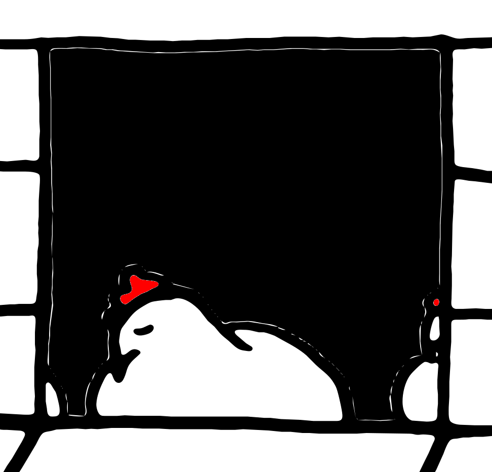
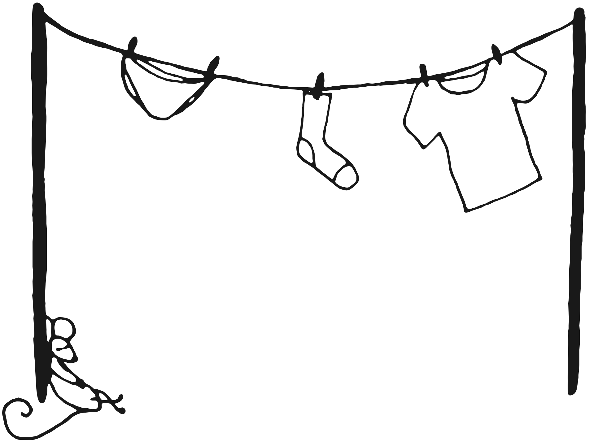
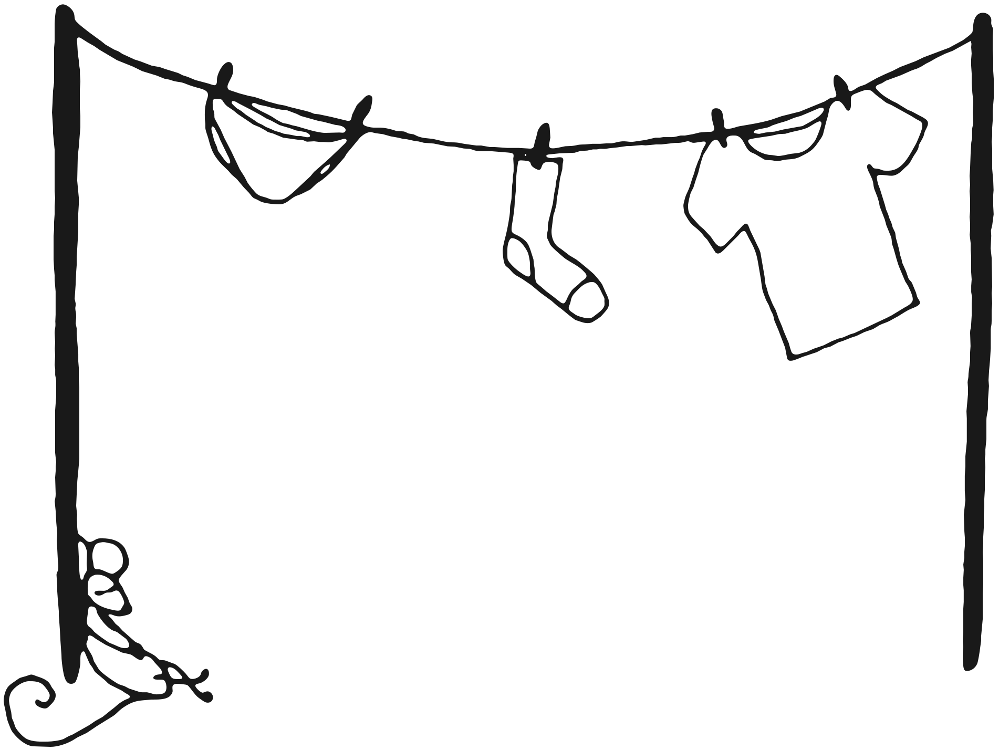
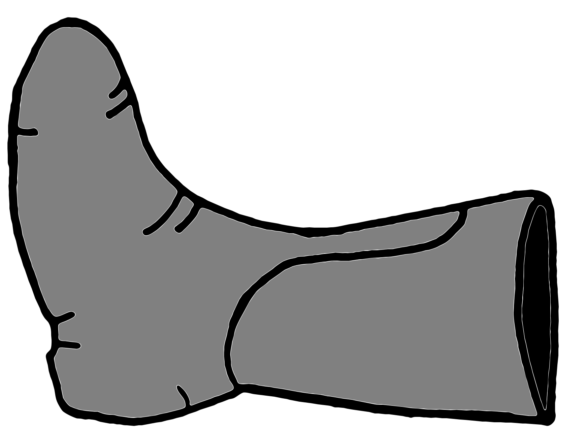
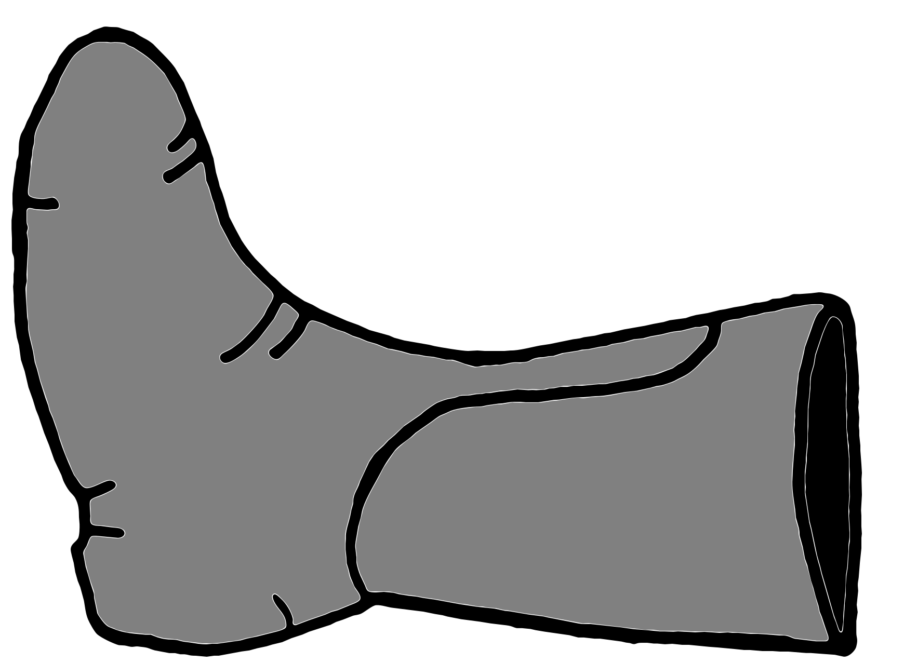

Fiona Fox is hungry. She'd love some eggs for dinner and she just knows where to find them: at farmer Firmus' hen house. Too bad that the farmer is a very light sleeper and has an endless supply of boots to throw at egg thieves ... Can you help Fiona get to the eggs? Hide her in the bushes before the farmer wakes up and the little fox might not have to go home hungry.
|  |
|---|
 


 
